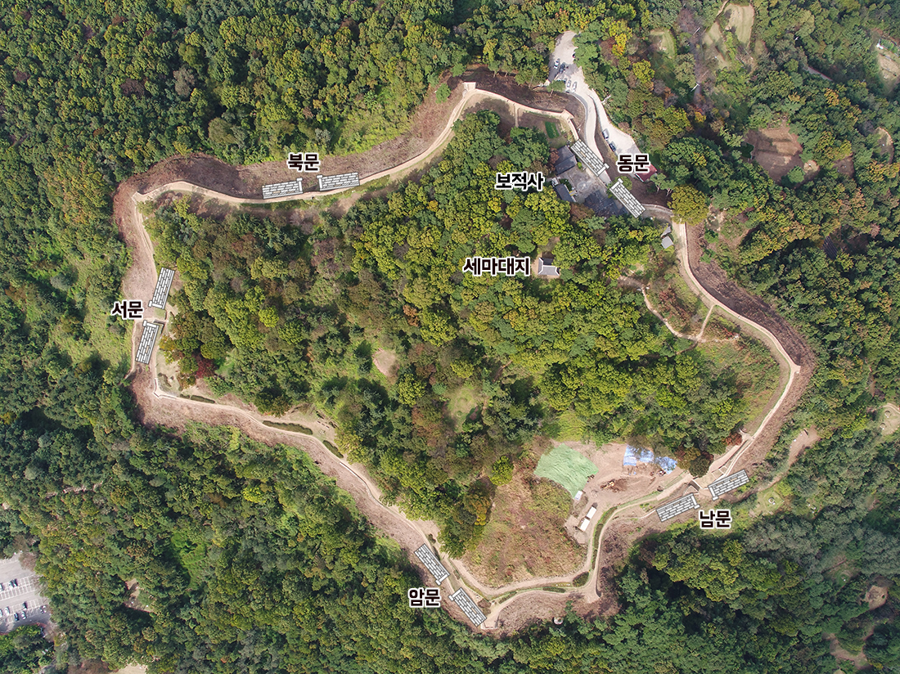

<?
$menu_focus='1';
include_once('../../layout/head.sub.html');
?>
<!-- wrap -->
<div id="layout">
<?
include_once('../../layout/head.html');
?>
<div id="content">
	
	<div class="sub_visual" style="background-image:url('../../assets/images/sub_visual1.jpg');">
		<h2>오산 독산성 문화제</h2>
		<span class="stit">2022 오산 독산성 문화제</span>
	</div>
	
	<div class="sub_content">
		<div class="sub_box">
			<div id="" class="container">
				<div class="dok_box">
					<div class="title">독산성</div>
					<div class="content">
						
						<div class="cont_text">사적 제140호인 오산 독산성과 세마대지는 1,095m의 테뫼식(산 정상부 중심으로 성벽을 두름) 산성과 산 정상부에 복원되어 있는 권율 장군의 승전과 관련된 장대(장수의 지휘대)를 말한다. 독산성은 독성산성이라고도 불리는데 오산과 수원, 화성에 걸쳐 펼쳐진 평야 한가운데 우뚝 솟아 주변을 두루 살필 수 있는 군사적 요충지에 자리하고 있다.</div>
						<div class="cont_text">
						독산성은 백제시대 처음 쌓은 것으로 알려져 있으며 통일신라와 고려 시대에도 지속적으로 이용되었을 것으로 추정된다. 임진왜란 때 권율 장군의 승전으로 군사적 중요성이 강조되었고 도성을 방어하는데 중요한 근거지가 되었다.
						</div>
						<div class="cont_text">
						기록에 따르면 임진왜란 중인 선조 27년(1594)에 경기도 관찰사 유근이 백성들과 함께 4일 만에 고쳐지었으며, 임진왜란 이후 선조 35년(1602)에 방어사 변응성이 석성으로 다시 지었다. 정조 16년(1792)에는 약 70일간 새로 짓는 것과 비슷하게 큰 규모로 공사를 했고, 정조 20년(1796) 수원 화성이 완공된 이후 협수 체제(서로 협력하여 지키는 구조)를 구축하였다.
						</div>
						<div class="cont_text">
						산꼭대기에는 세마대가 복원되어 있으며, 동문 안에 보적사가 있다. 내부 시설물로 성문 5개, 치(성벽 일부를 밖으로 돌출시켜 쌓은 시설) 8개, 우물 1개, 수로 1개가 남아있다.
						</div>
						<div class="cont_text_info">
						<ul>
						<li><b>동문</b>은 사람만 다니던 문으로 성문 안쪽에 보적사가 있다.</li>
						<li><b>남문</b>은 독산성의 정문으로 주출입구 역할을 했다. 말과 소가 다닐 수 있었으며 바닥에 성문을 고정시켰던 문확석 2개가 남아 있다.</li>
						<li><b>암문</b>은 순조 4년(1804) 현륭원의 경관을 보호하기 위해 북문을 폐쇄하는 대신 새로 지은 성문이다.</li>
						<li><b>서문</b>은 남문과 함께 독산성의 주출입구 역할을 했다. 정조 14년(1790), 독산성에 행차한 정조가 서문을 통해 출입했으며, 바닥에 성문을 고정시켰던 문확석 2개가 남아있다.</li>
						<li><b>북문</b>은 사람만 다니던 문으로 순조 4년(1804) 현륭원의 경관을 보호하기 위해 폐쇄되었다. 북문에서 보이는 풍경은 넓은 평야와 황구지천의 모습을 볼 수 있으며 시야가 좋은 날은 서북쪽으로 융건릉이 위치한 화산과 용주사가 내려다보인다.</li>
						</ul>
						</div>
						
					</div>
				</div>

				<div class="dok_box">
					<div class="title">독산성 세계문화유산 등재를 꿈꾸다</div>
					<div class="content">
						
						
						
						
						
					</div>

				</div>
			</div>
		</div>
	</div>

</div>

<?
include_once('../../layout/tail.html');
?>
</div>
<!-- //wrap -->
<?
include_once('../../layout/tail.sub.html');
?>
</body>
</html>